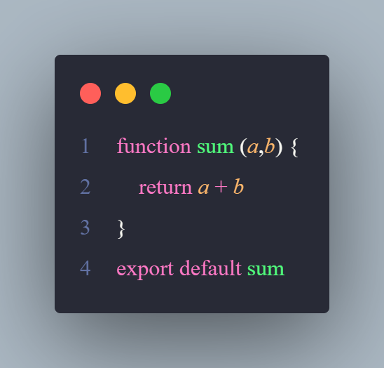
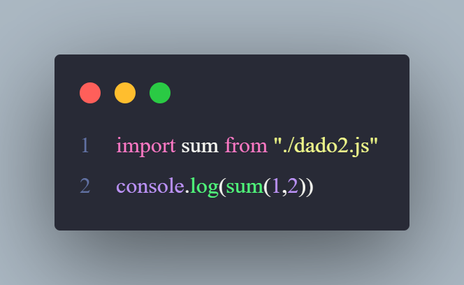
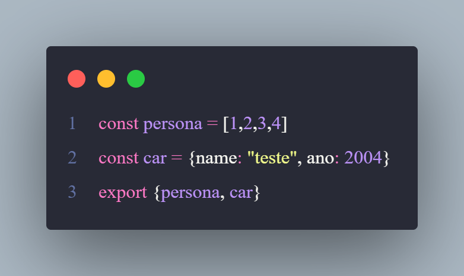
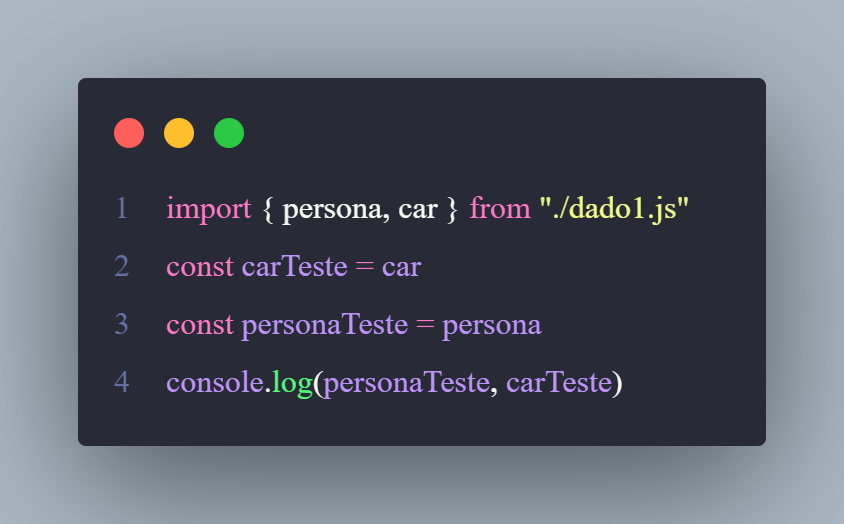

No JavaScript podemos exportar e importar dados usando o Modules
Primeiro colocamos um type na chamado do JS para o HTML, type: module
Segundo exportamos nosso dado de um outro arquivo .js, e para exportar usamos o comando: export default
Nesse caso acima criamos uma const recebendo uma lista, e exportamos essa lista
Depois de exportar, nós importamos dentro do arquivo que desejamos que ela seja importado com o comando: import "referência do dado" from "caminho do arquivo do dado"
Podemos exportar e importar funções também
Depois importamos dentro do arquivo que será importado:
Caso tenha mais de um dado a ser exportado, ficará dessa forma:
export:
Import:
